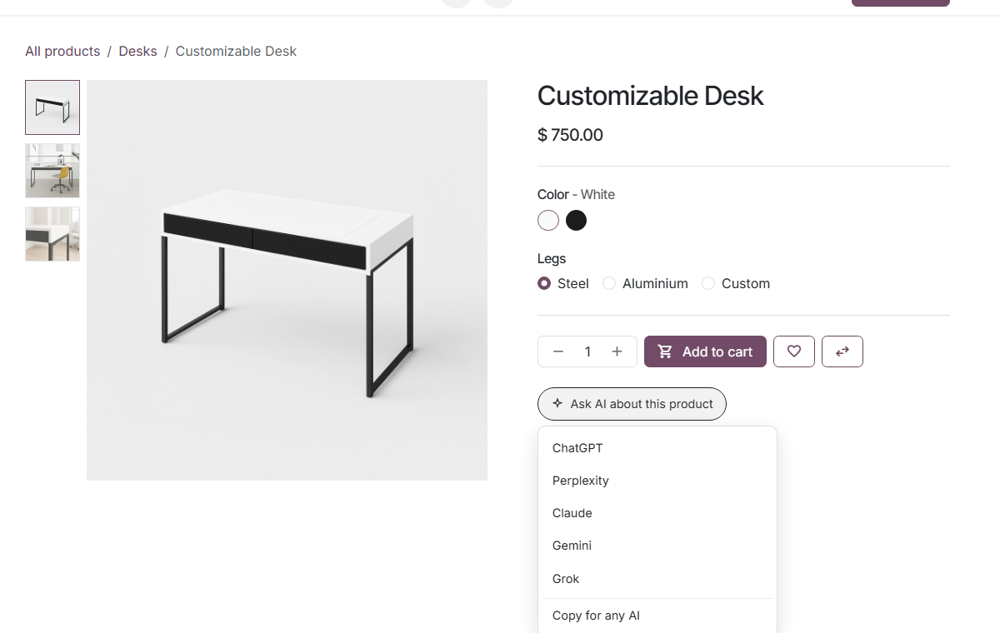
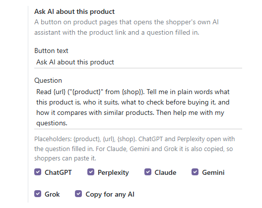

Many shoppers already paste product links into ChatGPT or Perplexity to ask whether a product suits them and how it compares with others. This module puts a button for that right under Add to cart. The shopper picks an assistant, and it opens with your product's link and a question about it.
Because the assistant reads your own product page, the answer is based on your description, your photos' captions and your specifications, not on a competitor's listing.
In Website > Configuration > Settings, in the eCommerce section, you can:
{product}, {url} and {shop};